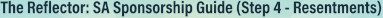

Step 1 Guide
AI-based spiritual guide for the First Step
Step 2 Guide
"Just for Today" AI-based spiritual guide for Step 2
Step 3 Guide
AI-based spiritual companion bot for Step 3 - Stop, Analyze, React
Step 4 Guide
AI-based virtual sponsor for Step 4 - Resentments
Step 4 Guide
From Fear to Faith - AI-based spiritual guide for Step 4 - Fears

Step 4 Guide
"The Reflector" - AI-based spiritual guide for Step 4 for release from resentment
Step 5 Guide
Step 5 - The Honesty Gym! - AI-based spiritual guide for Step 5
Step 6 Guide
The Scales - AI-based digital tool for Step 6
Step 7 Guide
Stepping into the day with humility - AI-based spiritual guide for Step 7
Step 8 Guide
The Bridge of Amends: The journey of willingness of Step 8 - AI-based spiritual guide for Step 8
Step 9 Guide
Words, actions, and attitude change - AI-based spiritual guide for Step 9
Step 10 Guide
The daily anchor for a life of recovery - AI-based spiritual guide for Step 10
Step 11 Guide
Quality Time with the Higher Power - An AI-powered Spiritual Guide for Step 11
Step 12 Guide
Step 12 - The spiritual compass for all שffairs of our lives and carrying the message - AI-based guide